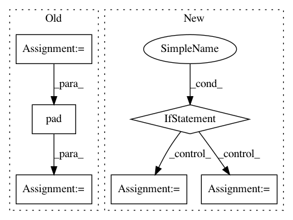

8b5a8bedaeb5e8bc35878d7ae39430a5c285c9ec,calamari_ocr/ocr/datasets/abbyy_dataset/dataset.py,AbbyyDataSet,_load_sample,#AbbyyDataSet#Any#Any#,68
Before Change
ly, lx = img.shape
// Cut the Image
img = img[line.rect.top: -ly + line.rect.bottom, line.rect.left: -lx + line.rect.right]
// add padding as required from normal files
img = np.pad(img, ((3, 3), (0, 0)), mode="constant", constant_values=img.max())
Binarize Image
if self.binary:
img = img > 0.9
return img, text
def store_text(self, sentence, sample, output_dir, extension):
After Change
if self.binary:
img = img > 0.9
else:
img = None
for p, page in enumerate(book.pages):
for l, line in enumerate(page.getLines()):
for f, fo in enumerate(line.formats):
text = None
cut_img = None
if self.mode == DataSetMode.EVAL or self.mode == DataSetMode.TRAIN:
text = fo.text
if text_only:
yield cut_img, text
else:
if self.mode == DataSetMode.TRAIN or self.mode == DataSetMode.PREDICT:
ly, lx = img.shape
In pattern: SUPERPATTERN
Frequency: 3
Non-data size: 6
Instances
Project Name: Calamari-OCR/calamari
Commit Name: 8b5a8bedaeb5e8bc35878d7ae39430a5c285c9ec
Time: 2019-04-08
Author: wick.chr.info@gmail.com
File Name: calamari_ocr/ocr/datasets/abbyy_dataset/dataset.py
Class Name: AbbyyDataSet
Method Name: _load_sample
Project Name: IndicoDataSolutions/finetune
Commit Name: 42e1e47ff386be77b740b64771644ea7aa875880
Time: 2020-02-26
Author: benlt@hotmail.co.uk
File Name: finetune/target_models/masked_language_model.py
Class Name: MaskedLanguageModelPipeline
Method Name: text_to_tokens_mask
Project Name: fgnt/nara_wpe
Commit Name: 09204a3dce2b419cd1416504903c41c724fa8de8
Time: 2018-06-27
Author: mail@lukas-drude.de
File Name: nara_wpe/wpe.py
Class Name:
Method Name: segment_axis